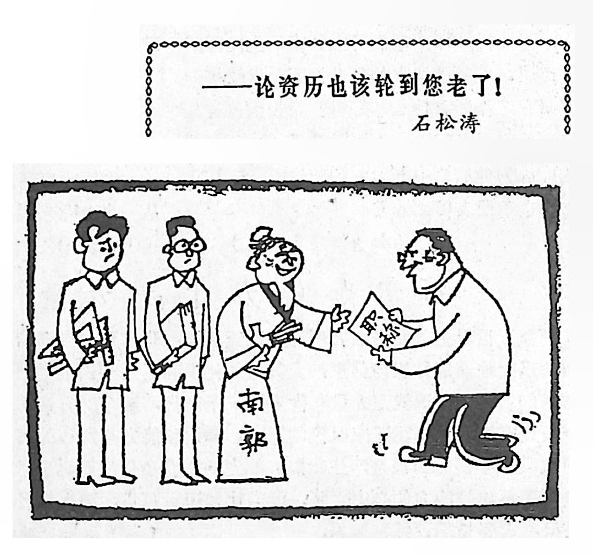

石松涛 《人事》1986年第8期（总第11期），第48页
——论资历也该轮到您老了！
"By Seniority, It Really Should Be Your Turn!"
- Text in the drawing
- 南郭 / 职称
Nanguo / Professional title - Description
- An official bows and hands a 职称 (professional title) certificate to Mr Nanguo while two younger, qualified men look on.
- Note
- 南郭先生 (Mr Nanguo) is the fable's impostor who pretended to play the yu in a court ensemble of three hundred and fled when the new king asked for solos.
- Artist
- Shi Songtao 石松涛
- Published in
- 《人事》1986年第8期（总第11期）, p. 48
- Themes
- Seniority · Diplomas and credentials · Fable, legend and history

Cite
Shi Songtao, “——论资历也该轮到您老了！” ["By Seniority, It Really Should Be Your Turn!"], Renshi (Personnel) 《人事》, 1986, no. 8, p. 48.